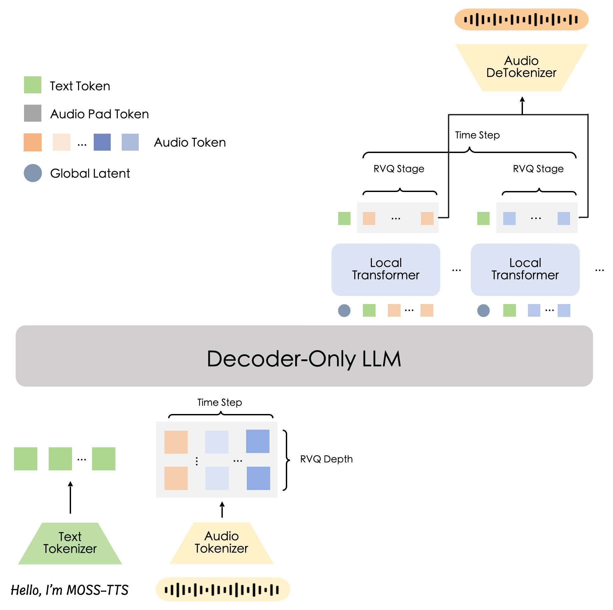

MOSS-TTS-Local#
MOSS-TTS-Local-Transformer-v1.5 is a text-to-speech model from MOSI.AI and the OpenMOSS team. It generates native 48 kHz stereo speech with MOSS-Audio-Tokenizer-v2 and supports zero-shot voice cloning from reference audio, reference-less synthesis, long-form speech generation, streaming, token-level duration control, Pinyin/IPA pronunciation control, multilingual synthesis, and code-switching. The model supports 31 languages, accepts language tags to guide multilingual generation, and supports inline pause markers such as [pause 3.2s] for explicit prosody control.

Architecturally, MOSS-TTS-Local-Transformer-v1.5 is the local-transformer counterpart to the delay-pattern MOSS-TTS-v1.5. Instead of staggering RVQ streams across time, the Qwen3-4B backbone emits a global latent for each aligned audio frame, and a lightweight frame-local transformer expands that latent into a fixed 12-codebook RVQ block. In SGLang-Omni it runs as a preprocessing → tts_engine → vocoder pipeline served through the OpenAI-compatible /v1/audio/speech endpoint.
Component |
Spec |
|---|---|
Architecture |
|
Backbone |
Qwen3-4B autoregressive decoder (36 L, hidden=2560, GQA 32/8) |
Audio tokenizer |
MOSS-Audio-Tokenizer-v2 |
Audio tokens |
Fixed 12-codebook RVQ depth |
Output audio |
48 kHz stereo |
Languages |
31 languages with optional language tags |
Controls |
Voice reference, target duration tokens, Pinyin/IPA, pause markers, style instructions |
Prerequisites#
Install sglang-omni by following Installation, then
download the model (public, no token required):
hf download OpenMOSS-Team/MOSS-TTS-Local-Transformer-v1.5
The processor ships with the checkpoint, so no extra TTS package is needed. Decoding base64
(data-URI) reference audio additionally requires soundfile (uv pip install soundfile).
Server Configuration#
The default layout puts the AR backbone and the codec/vocoder on the same GPU:
sgl-omni serve \
--model-path OpenMOSS-Team/MOSS-TTS-Local-Transformer-v1.5 \
--port 8000
A matching config file is available at examples/configs/moss_tts_local.yaml.
Synthesizing Speech#
Basic Speech#
MOSS-TTS-Local can synthesize speech without a reference clip:
curl -X POST http://localhost:8000/v1/audio/speech \
-H "Content-Type: application/json" \
-d '{
"model": "OpenMOSS-Team/MOSS-TTS-Local-Transformer-v1.5",
"voice": "default",
"input": "SGLang-Omni is a great project!"
}' \
--output output.wav
Voice Cloning#
Provide a reference clip when you want voice cloning. The references field accepts audio_path
(a local path, HTTP URL, or base64 data URI) and text (the transcript of that clip). Supplying
the transcript materially improves cloning quality.
curl -X POST http://localhost:8000/v1/audio/speech \
-H "Content-Type: application/json" \
-d '{
"model": "OpenMOSS-Team/MOSS-TTS-Local-Transformer-v1.5",
"voice": "default",
"input": "SGLang-Omni is a great project!",
"references": [{
"audio_path": "https://huggingface.co/datasets/zhaochenyang20/seed-tts-eval-mini/resolve/main/en/prompt-wavs/common_voice_en_10119832.wav",
"text": "We asked over twenty different people, and they all said it was his."
}]
}' \
--output output.wav
ref_audio and ref_text are accepted as shorthand for references[0].audio_path and
references[0].text.
Python#
import requests
resp = requests.post(
"http://localhost:8000/v1/audio/speech",
json={
"model": "OpenMOSS-Team/MOSS-TTS-Local-Transformer-v1.5",
"voice": "default",
"input": "Get the trust fund to the bank early.",
"ref_audio": "https://huggingface.co/datasets/zhaochenyang20/seed-tts-eval-mini/resolve/main/en/prompt-wavs/common_voice_en_10119832.wav",
"ref_text": "We asked over twenty different people, and they all said it was his.",
},
)
resp.raise_for_status()
with open("output.wav", "wb") as f:
f.write(resp.content)
Reference Audio Sources#
audio_path / ref_audio may be a local filesystem path readable by the server, an HTTP(S) URL, or a base64 data URI (data:audio/wav;base64,<...>, decoded with soundfile):
import base64
import requests
reference_url = "https://huggingface.co/datasets/zhaochenyang20/seed-tts-eval-mini/resolve/main/en/prompt-wavs/common_voice_en_10119832.wav"
reference_resp = requests.get(reference_url)
reference_resp.raise_for_status()
ref_audio = (
"data:audio/wav;base64,"
+ base64.b64encode(reference_resp.content).decode("ascii")
)
resp = requests.post(
"http://localhost:8000/v1/audio/speech",
json={
"model": "OpenMOSS-Team/MOSS-TTS-Local-Transformer-v1.5",
"voice": "default",
"input": "SGLang-Omni is a great project!",
"ref_audio": ref_audio,
"ref_text": "Transcript of the reference clip.",
},
)
resp.raise_for_status()
with open("output_data_uri.wav", "wb") as f:
f.write(resp.content)
Reference encodes are cached (LRU) and coalesced into batched codec calls, so resending the same reference clip skips re-encoding.
Streaming#
Set "stream": true and "response_format": "pcm" to receive raw 48 kHz
mono PCM chunks in real time. Pipe the stream through ffmpeg when you want a
playable WAV file:
curl -N -X POST http://localhost:8000/v1/audio/speech \
-H "Content-Type: application/json" \
-d '{
"model": "OpenMOSS-Team/MOSS-TTS-Local-Transformer-v1.5",
"voice": "default",
"input": "Get the trust fund to the bank early.",
"ref_audio": "https://huggingface.co/datasets/zhaochenyang20/seed-tts-eval-mini/resolve/main/en/prompt-wavs/common_voice_en_10119832.wav",
"ref_text": "We asked over twenty different people, and they all said it was his.",
"stream": true,
"response_format": "pcm"
}' \
| ffmpeg -f s16le -ar 48000 -ac 1 -i pipe:0 output_stream.wav
Duration Control#
MOSS-TTS-Local conditions on a target duration token count (codec frames; a larger count yields longer audio). Set it with an inline ${token:N} prefix on input (stripped before synthesis), or with a token_count (alias duration_tokens) parameter. The count must be a positive integer.
{
"model": "OpenMOSS-Team/MOSS-TTS-Local-Transformer-v1.5",
"voice": "default",
"input": "${token:150}A sentence with an explicit duration target.",
"ref_audio": "..."
}
curl -X POST http://localhost:8000/v1/audio/speech \
-H "Content-Type: application/json" \
-d '{
"model": "OpenMOSS-Team/MOSS-TTS-Local-Transformer-v1.5",
"voice": "default",
"input": "${token:150}A sentence with an explicit duration target.",
"ref_audio": "https://huggingface.co/datasets/zhaochenyang20/seed-tts-eval-mini/resolve/main/en/prompt-wavs/common_voice_en_10119832.wav",
"ref_text": "We asked over twenty different people, and they all said it was his."
}' \
--output output_duration_tokens.wav
If omitted, the model picks the duration itself.
Text Markup, Style, and Language#
Inline text markup that the model understands (for example [pause Xs], pinyin, and IPA) is passed through unchanged. An optional instructions field carries a
free-text style directive, and an optional language hint biases the target language (omit it to let the model infer from the text):
{
"model": "OpenMOSS-Team/MOSS-TTS-Local-Transformer-v1.5",
"voice": "default",
"input": "今天天气不错 [pause 0.5s] 就该出去晒晒太阳。",
"ref_audio": "...", "ref_text": "...",
"language": "Chinese"
}
curl -X POST http://localhost:8000/v1/audio/speech \
-H "Content-Type: application/json" \
-d '{
"model": "OpenMOSS-Team/MOSS-TTS-Local-Transformer-v1.5",
"voice": "default",
"input": "今天天气不错 [pause 0.5s] 就该出去晒晒太阳。",
"ref_audio": "https://huggingface.co/datasets/zhaochenyang20/seed-tts-eval-mini/resolve/main/en/prompt-wavs/common_voice_en_10119832.wav",
"ref_text": "We asked over twenty different people, and they all said it was his.",
"language": "Chinese",
"instructions": "Use a natural conversational style."
}' \
--output output_markup.wav
Generation Parameters#
Parameter |
Default |
Notes |
|---|---|---|
|
served model |
Served model identifier |
|
(required) |
Text to synthesize. It may carry a |
|
|
Voice identifier |
|
|
Reference clip for cloning. Each item has |
|
|
Shorthand for |
|
|
Stream raw PCM audio chunks (with |
|
|
Optional target-language hint. Omit to let the model infer |
|
|
Optional free-text style directive |
|
|
Target duration in codec frames. It must be |
|
|
Maximum generated frames. An explicit value must be |
|
|
Sampling temperature. A single |
|
|
Top-p sampling. A single |
|
|
Top-k sampling. A single |
|
|
Audio repetition penalty |
|
|
Non-negative integer. See Seed Reproducibility |
The two default values reflect the model’s separate sampling channels: the text channel is the
per-frame continue/stop head and the audio channel is the RVQ codebooks. A single temperature,
top_p, or top_k in the request applies to both.
Seed Reproducibility#
A fixed seed is reproducible at any concurrency: each token’s sampling depends only on its
own seed and position, never on its batch neighbours.
Reproducibility holds for a fixed server configuration and hardware — backbone floating-point non-determinism (different batch shapes, GPUs, or kernels) can still shift the sampled tokens across deployments.
seedmust be a non-negative integer; negative or non-integer values are rejected.Without a
seed, each request draws a fresh random seed and is not reproducible across runs.
Benchmarking#
MOSS-TTS-Local clones from each prompt (--ref-format references) and estimates a per-sample
duration with --token-count auto. Run at --max-concurrency 16.
python -m benchmarks.eval.benchmark_tts_seedtts \
--meta zhaochenyang20/seed-tts-eval-arrow \
--model OpenMOSS-Team/MOSS-TTS-Local-Transformer-v1.5 --port 8000 \
--ref-format references \
--token-count auto \
--output-dir results/moss_tts_en \
--lang en --max-concurrency 16
Use --lang zh for the Chinese split. See benchmarks/README.md for the full workflow.
Evaluation Benchmarks#
Seed-TTS-Eval Reference Performance#
Seed-TTS-Eval full set (EN = 1088, ZH = 2020) on 2× H100, concurrency 16,
--token-count auto. These are reference inference-performance numbers reported
in PR #728 — reproducible references, not CI thresholds.
Split |
Latency mean / p95 (s) |
RTF mean |
Throughput (req/s) |
|---|---|---|---|
EN |
1.538 / 1.989 |
0.3682 |
10.355 |
ZH |
— |
0.3306 |
8.62 |
Multilingual Voice Clone#
We evaluate MOSS-TTS-Local-Transformer-v1.5 on public multilingual TTS suites and internal voice-cloning stress sets, covering multilingual synthesis, speaker similarity, and hard speaker-stability cases.
WER (↓) and SIM (↑) are macro-averaged and reported in percentage points. N/A
means the benchmark is speaker-similarity only and does not report WER.
Benchmark |
WER ↓ |
SIM ↑ |
|---|---|---|
|
2.0350 |
68.9850 |
|
7.4800 |
61.5871 |
|
6.3692 |
75.3121 |
|
20.4787 |
63.0023 |
These results were measured with audio sampling parameters temperature=1.7,
top_p=0.8, and top_k=25. In tests from MOSI.AI, temperature=0.6, top_p=0.95,
top_k=25, and audio_repetition_penalty=1.2 may produce better quality.
Known Limitations#
Voice cloning depends on the reference. Omit the reference for non-cloned speech; provide the transcript (
text/ref_text) for the best speaker similarity when cloning.Rare runaway generation. A small fraction of utterances can loop and generate up to
max_new_tokens; setting atoken_count(or loweringmax_new_tokens) bounds the output.Duration is a hint.
${token:N}/token_countsteers length but is not an exact clip duration.Reproducibility is hardware-bound. A fixed
seedreproduces only on the same server configuration and GPU; see Seed Reproducibility.